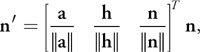

GPU Gems 3
GPU Gems 3 is now available for free online!Please visit our Recent Documents page to see all the latest whitepapers and conference presentations that can help you with your projects.
You can also subscribe to our Developer News Feed to get notifications of new material on the site.
Chapter 34. Signed Distance Fields Using Single-Pass GPU Scan Conversion of Tetrahedra
Kenny Erleben
University of Copenhagen
Henrik Dohlmann
3Dfacto R&D
34.1 Introduction
In this chapter we address the practicalities in computing a signed distance field. We present a method that accelerates the computation by using graphics hardware. Our method is simple to implement and offers a trade-off between performance and quality.
34.1.1 Overview of Signed Distance Fields
A signed distance field is represented as a grid sampling of the closest distance to the surface of an object represented as a polygonal model. Usually the convention of using negative values inside the object and positive values outside the object is applied. Signed distance fields are very attractive in computer graphics and related fields. Often they are used for collision detection in cloth animation (Bridson et al. 2003), multi-body dynamics (Guendelman et al. 2003), deformable objects (Fisher and Lin 2001), mesh generation (Molino et al. 2003), motion planning (Hoff et al. 1999), and sculpting (Bærentzen 2001).
However, fast and robust signed distance field computation is often either a performance bottleneck, because of high-resolution fields, or a nearly impossible task because of degeneracies in input meshes. Thus, computation can be tedious and time-consuming. For example, a naive implementation on a CPU can take hours, even days, to complete for high-resolution grids (2563 resolution or greater).
Methods for computing distance fields on graphics hardware fall into two different approaches: distance meshing or scan conversion of bounded volumes. Section 34.7 gives a short survey of these and other approaches.
34.1.2 Overview of Our Method
Our approach is a novel scan conversion method. In addition to being GPU-accelerated, our method fixes the leaking artifacts sometimes produced by the prism scan (Sigg et al. 2003) and characteristic scan conversion (CSC) (Mauch 2003) methods. It is therefore able to handle "inconsistent meshes" (Bischoff et al. 2005), which are polygonal models that have holes, flipped surfaces, overlapping faces, and worse. In practice, these polygonal models are often encountered on object surfaces that are modeled by an animator or obtained by scanning or segmentation.
More precisely, our method does not need any scan line and combines the novel fragment program from prism scan with the pseudonormal method (Aanæs and Bærentzen 2003). Thus, it is single-pass and avoids any sign errors of other scan conversion algorithms. Note that the correct sign computation in the fragment program relies on the angle-weighted pseudonormals of the vertices and edges; if these pseudonormals cannot be computed correctly, there is no guarantee that the method will compute the proper sign of the distance field.
In the prism scan and CSC methods, the signed distance is computed within a narrowband shell along the surface of objects. The size of the shell is user specified. Our method, too, is limited by a narrow-band size. Previous methods often used narrowband sizes of three to five voxels. These small narrow-band sizes can hide computation errors at farther distances, so we use narrow-band sizes on the order of 30 to 50 voxels.
34.2 Leaking Artifacts in Scan Methods
Characteristic scan conversion uses a subdivision of space, which is inspired by Voronoi regions. More precisely, a bounded volume, or characteristic polyhedron, is created for each feature of the polygonal model (that is, the vertex, edge, and face) such that it encloses the set of the voxels that is closer to this feature than any other features. The union of all these potentially overlapping bounded volumes defines the narrow-band shell.
To avoid aliasing artifacts from discretization, we slightly enlarge the bounded volumes. Each feature's bounded volume is then scan-converted, and for each voxel that is inside the volume, its signed distance to the feature is computed. For any voxel inside the narrow-band shell, the signed distance to the object is then chosen. From all the signed distances to some feature previously computed for this voxel, this signed distance is chosen as the one with minimum absolute value.
Prism scan works similarly, except that no bounded volumes are created for the edges and vertices; instead, a single type of bounded volume—a tower prism—is created for each face.
Both methods sometimes produce leaking artifacts, whereby the sign of the distance computed for some voxels is wrong. These artifacts come from the following three sources.
34.2.1 The Plane Test
Both scan methods—distance meshing and scan conversion of bounded volumes—use a plane test to determine the sign of the distance function, as illustrated in Figure 34-1. As shown in this figure, this usage may lead to an incorrect computation of the sign.
){kind=link}
Figure 34-1 Plane Test Sign Error
The figure shows a cross section of a polygonal model focused on two faces, A and B. A and B are shown together with the bounded volume around A, in which the signed distance is calculated. In the dashed-red area, the points are closest to A and the sign will therefore become positive. This is clearly wrong. The points in the dashed-red region are located inside the object, so the sign should be negative. The sign will be correct in the green-dashed region. If the planes alone are used to determine the distance, the distance will be wrong in both the red-dashed and in the green-dashed areas.
In the characteristic scan conversion method, this problem is worse because the characteristic polyhedra are enlarged to avoid aliasing. So for a face, the distance of voxels outside the face's Voronoi region is also computed with respect to the face plane. This means that the dashed lines shown in Figure 34-1 will produce voxels with distances close to zero inside Voronoi regions of the neighboring faces. Prism scan performs a case analysis of voxels in enlarged regions and will only suffer from a wrong sign computation.
Figure 34-2 shows real-life examples of these problems. As is the case for all such examples in this chapter, for better visualization, we cut the isosurface by a plane such that the inside and outside parts are shown in blue and red colors, respectively. Figure 34-5, in the next section, shows the results of using our method.
){kind=link}
){kind=link}
Figure 34-2 Leaking Due to the Plane Test Problem
34.2.2 How a Bounding Volume Is Constructed
The second source of leaking artifacts lies in the way bounding volumes are constructed, as shown in Figure 34-3. The narrow-band shells have different widths on opposite sides of a thin region, which causes the inside region of one side to extend beyond the outside region on the opposite side. For the configuration shown in the figure, the bounding region of the top face extrudes below the bounding region of the bottom face. This results in the small gray area in the figure, where the distance becomes negative. In Figure 34-4, a real-life example is shown.
){kind=link}
){kind=link}
Figure 34-3 A Cross Section of a Mesh with Thin Structure, Shown Together with Their Bounding Regions
Figure 34-4 Leaking by Construction
Our method, which is described in Section 34.3, is capable of handling these two first sources of leaking artifacts—use of a plane test and how a bound volume is constructed—as shown in Figure 34-5.
Figure 34-5 Results Produced with Our Tetrahedra GPU Scan Method
34.2.3 Folds in the Polygonal Model
The last source of leaking artifacts is due to folds present in the polygonal model. Although both scan methods rely on the model's surface to be a perfect two-manifold, this condition is not sufficient to avoid sign problems. In fact, if the surface contains folds, then the orientation of a triangle face can be flipped.
A fold typically overlaps other triangles in the mesh, with its inside pointing in the same direction as the other triangles' outsides. If the folded triangle's outside has an absolute distance to a voxel that is less than the absolute distance to the overlapped triangles, the distance value computed will have the wrong sign and distance. A special case of this problem occurs when the folded triangle and the overlapped triangles have the same absolute distance. In this scenario, the sign that's selected depends upon the scan order, and this order can give some weird-looking errors, where the distance is correct but the sign is wrong. This situation creates a strange leaking effect. Figure 34-6 illustrates the mesh topology of a fold, and Figure 34-7 shows a real-life example.
){kind=link}
){kind=link}
Figure 34-6 The Mesh Topology of a Fold
Figure 34-7 Leaking by Folding
Folds cannot be handled by a single-pass algorithm. Our method could be extended with a second pass to deal with sign problems caused by folding, as done in Houston et al. 2006.
34.3 Our Tetrahedra GPU Scan Method
Given a surface of an object as a collection of triangles, we compute the signed distance within a user-specified narrow-band shell.
Our approach, the tetrahedra (T4) GPU scan method, uses a shell made of tetrahedra: that is, only tetrahedral volumes are considered. Section 34.3.1 describes how we compute the shell from the mesh triangles on the CPU. Several tetrahedra are computed per triangle, and each of these tetrahedra bounds a region of space containing a subset of the grid voxels. For each of these voxels, the signed closest distance to the triangle is computed on the GPU.
To ensure complete coverage, we make sure the generated tetrahedra covers the Voronoi regions of the mesh within a specified narrow-band distance. Thus, the generated tetrahedra from a triangle must cover all voxels of the Voronoi region of the triangle. The union of generated tetrahedra from a one-ring neighborhood of a vertex must, likewise, cover the Voronoi region of the vertex. In addition, the union of tetrahedra from two neighboring triangles of an edge must cover the Voronoi region of that edge. Our tetrahedra generation method generates tetrahedra so that there are large overlaps in the Voronoi regions of vertices and edges.
Using tetrahedra allows us to employ a fast tetrahedron slicer to compute the intersections of the shell with the grid voxels. The technique of slicing tetrahedra is well known from volume visualization and is extremely efficient. It is thus cheaper than doing a 3D scan conversion of more-complex prisms, cones, or wedges.
To determine the voxels lying inside each tetrahedron, we move a z-plane in the direction of the positive z axis. At each z-slice of the regular grid, we halt the z-plane and find the cross sections between the tetrahedra and the z-plane, as described in Section 34.3.2. A status set contains all the tetrahedra that intersect the z-slice at any given step. We adopted a simple sweep-line algorithm (de Berg et al. 1997) to quickly find all tetrahedra that intersect the z-plane. This algorithm requires the tetrahedra to be sorted by increasing z-value. As an alternative, we could use the occlusion query method from Sud et al. 2004.
Having found the cross sections, we render them and use a GPU fragment program to compute the signed distances, as described in Section 34.3.3. The fragment program outputs the signed distance to the color buffer and outputs the absolute value of the signed distance to the depth buffer. A depth test is set up so that the final result in the color buffer is the signed distance with minimum absolute value, as wanted. Before moving to the next z-slice of the regular grid, we read back the computed distance values from the frame buffer and store them in an internal data structure. Listing 34-1 shows the overall steps of the T4 GPU scan method.
Example 34-1. Pseudocode for Our T4 GPU Scan Conversion Method
- algorithm T4-GPU-scan()
- for z = min z plane to max z plane
- foreach tetrahedra t that intersects the z plane
- find cross-section with z
- render cross section
- next t
- read back distance values
- next z
- end algorithm
Note that we could have created the shell during the scan conversion to minimize storage usage. However, in our implementation we have chosen to keep the shell creation as a separate stage for better modularity of the implementation.
Our shell creation method has linear time complexity, O(n), in the number of triangle faces, n, because it iterates once over the triangle faces, and it generates a fixed number of tetrahedra for each triangle face. The initialization of the sweep line (the z-sorting of the tetrahedra) has O(n log n) time complexity, although the actual scan conversion can be expected to have linear complexity in the number of generated tetrahedra.
Observe that we make one render pass for each z-increment. Also, we make one render call per cross section. Currently, cross-section geometry is transferred to the GPU using OpenGL's immediate mode. We could optimize this step considerably by using vertex arrays and geometry shaders for creating the cross sections. This will be the subject of future work.
34.3.1 Computing the Shell
The shell is computed by iterating over the mesh triangles and generating five tetrahedra per triangle.
Using the longest edge, e, and the orthogonal height vector, h, a tight-fitting rectangle can be placed in the plane of the triangle. From now on, the rectangle is enlarged by the user-specified narrow-band size, e. Finally, the four vertices of the rectangle are extruded an e-distance outward and inward along the face normal, n, to produce an enclosing oriented bounding box (OBB) around the triangle face. Figure 34-8 illustrates the steps involved.
){kind=link}
Figure 34-8 Fitting an Oriented Bounding Box Around a Triangle Face
The OBB is then directly decomposed into five tetrahedra. This step is simple to implement and nearly impossible to get wrong. It ensures complete coverage of the narrow band, although large parts may stick outside or overlap. Thus, simplicity comes at a performance degradation.
The shell creation method makes no assumption about the mesh and can be used for unstructured meshes with all kinds of degeneracies. Note that any kind of tetrahedral shell generation method could be used in our scan conversion method, such as the adaptive thin tetrahedral shell mesh (Erleben et al. 2005), which allows a trade-off between simplicity of creation and efficiency of scan conversion.
34.3.2 Computing the Cross Section of a Tetrahedron
To calculate the cross section of a tetrahedron by using z-plane, we sort the four points of the tetrahedron by increasing z-value. This method allows a very simple algorithm to find the number of intersections and to create polygons to be processed by the fragment program.
Consider Figure 34-9. If the z-plane under consideration is below the lowest point in the tetrahedron, there will be no intersections. Similarly, if the z-plane is above the highest point in the tetrahedron, there will be no intersections, as shown in Figure 34-9.
){kind=link}
Figure 34-9 The Possible Different Topological Slicings of a Tetrahedron
There are only three topologically distinct ways a z-plane can actually slice the tetrahedron:
- The z-plane lies below p 1. In this case the plane cuts the lines p 0 p 3, p 0 p 1, and p 0 p 2 (case A in the figure).
- The z-plane lies between p 1 and p 2. In this case the plane cuts the lines p 0 p 3, p 1 p 3, p 1 p 2, and p 0 p 2 (case B in the figure).
- The z-plane lies above p 2. In this case the plane cuts the lines p 0 p 3, p 1 p 3, and p 2 p 3 (case C in the figure).
In case B, the polygon will always be convex, which can be seen by drawing all the possible configurations of a tetrahedron and considering the order in which the plane cuts the four lines. A tetrahedron that is sliced in only one point, or sliced along a line, has no area and should not be considered. The slicing algorithm we described ensures this never happens. The polygons might be clockwise or counterclockwise, so a postprocess might be necessary to ensure proper orientation. However, the T4 GPU scan method does not need this property.
34.3.3 Computing Signed Distance Using Angle-Weighted Pseudonormals
A novel fragment program was introduced in Sigg et al. 2003, which calculated the distance to a triangle. We describe here the case analysis used to determine the distance, together with our extension that calculates the correct sign through use of angle-weighted pseudonormals.
The triangle is used to create a local triangle frame consisting of vectors r, s, and t, as shown in Figure 34-10.
){kind=link}
Figure 34-10 A Local Triangle Frame for a Triangle in the Mesh and a Related Cross Section
The t vector is set to the face normal, n. Next, the longest edge of the triangle is found, and vertices are numbered counterclockwise with respect to the face normal. By convention, the longest edge is always going from vertex 0 to vertex 1, as shown in Figure 34-11. The origin of the triangle frame is computed by projecting vertex 2 onto the longest triangle edge. Next, r is computed as the unit vector from the origin to vertex 1, and s as the unit vector from the origin to vertex 2.
){kind=link}
Figure 34-11 A Local Triangle with Lengths , , and , and Pseudonormals
The coordinates of the cross section of the tetrahedron are converted to the local triangle frame and sent to the GPU as texture coordinates p = (r, s, t), where r, s, and t are the local triangle coordinates with respect to the r, s, and t vectors, respectively.
The triangle is analyzed to produce three lengths, as shown in Figure 34-11: the height, h; the length, a, from the origin of the triangle frame to vertex v 1; and the length, b, from the origin to vertex v 0.
Further, the six angle-weighted pseudonormals for the vertices (n v0, n v1, and n v2) and edges (n e0 , n e1 , and n e2 ,) are calculated and transformed to the local triangle frame by using a rotation matrix constructed from unit column vectors, as follows:

where n' is the transformed normal of n. These pseudonormals and the three lengths are sent to the GPU as texture coordinates.
The first thing that happens on the GPU is a reduction of the problem to the halfplane, where r 0. That is, if r is negative, we flip the data such that r = -r, a = b, n v1 = n v0, and n e1 = n e2. This considerably reduces further analysis.
A primed coordinate system with coordinates r' and s' is used in the case analysis. The origin of the primed coordinate system is vertex 2, and the r' axis is the vector from vertex 2 to vertex 1. The s' axis is simply the hat of the r' axis. Note that the primed coordinate system does not have unit axis vectors. r' and s' are derived from r and s, and a case analysis is performed according to regions shown in Figure 34-12.
){kind=link}
Figure 34-12 Regions Used in the Case Analysis for the Triangle
From the case analysis, we can compute the distance to the closest feature and determine the corresponding pseudonormal. The sign can be computed using the pseudonormal of the closest feature, n(c), and some point, c, on the closest feature, as the sign of
|
d = n(c)·(p - c), |
as described in Bærentzen and Aanæs 2005.
The complete Cg program for the signed distance field computation is shown in Listing 34-2.
Example 34-2. Cg Program Using Case Analysis and Pseudonormals to Correctly Compute the Sign
- void main(
- in float3 local : TEXCOORD0,
- in float3 triangle : TEXCOORD1,
- in float3 nv0 : TEXCOORD2,
- in float3 nv1 : TEXCOORD3,
- in float3 nv2 : TEXCOORD4,
- in float3 ne0 : TEXCOORD5,
- in float3 ne1 : TEXCOORD6,
- in float3 ne2 : TEXCOORD7,
- out float4 dist : COLOR0,
- out float absDist : DEPTH,
- const uniform float narrowbandSize)
- {
- // Copy to temporaries.
- float a = triangle.x;
- float b = triangle.y;
- float h = triangle.z;
- float r = local.x;
- float s = local.y;
- float t = local.z;
- float3 nv = nv1;
- float3 ne = ne1;
- // Normalize to half-space r >= 0.
- if (r < 0) {
- r = -r;
- a = b;
- nv = nv0;
- ne = ne2;
- }
- // Transform to the primed coordinate frame.
- float lensqr = (a * a + h * h);
- float rprime = (a * r + h * h - h * s) / lensqr;
- float sprime = (a * s + h * r - h * a) / lensqr;
- // Case analysis
- // Default to region I
- float3 c = float3(0, 0, 0);
- float3 n = float3(0, 0, 1);
- if (s < 0) {
- // Region III or II
- c.x = a;
- n = (r > a) ? nv : ne0;
- }
- else if (sprime > 0) {
- if (rprime < 0) {
- // Region VI
- c.y = h;
- n = nv2;
- }
- else {
- // Region IV or V
- c.x = a;
- n = (rprime > 1) ? nv : ne;
- }
- }
- // IV, V, VI
- rprime = max(max(- rprime,0), rprime - 1);
- // I, V
- sprime = max(sprime,0);
- // II, III
- r = max(r-a,0);
- // Compute the distance.
- float tmp = (s < 0) ? (r * r + s * s)
- : ((rprime * rprime + sprime * sprime) * lensqr);
- absDist = sqrt(tmp + t * t);
- // Compute the sign.
- float sign_tst = sign(dot(n, local - c));
- dist = float4(sign_tst * absDist, local);
- // Depth buffer is clamped to 0..1, so we rescale.
- absDist /= narrowbandSize;
- }
34.4 Results
All measurements in Figures 34-13 and 34-14 were performed on a 2.4 GHz Pentium 4 with 4 GB of RAM, running Gentoo Linux with an NVIDIA GeForce 6800 GT with 256 MB of RAM. We used a narrow-band size corresponding to 10 percent of the maximum mesh extent, so roughly to an order of 30 to 50 voxels. All timings are in seconds and plotted in Figures 34-13 and 34-14. As expected, all figures show linear complexity in the mesh size.
){kind=link}
){kind=link}
Figure 34-13 The Time to Process the Geometry on the CPU for the OBB Shell Creation Method
Figure 34-14 The Time to Process the Geometry on the GPU
Figure 34-13 shows the CPU time overhead. Clearly, the lookup operations into our tetrahedra mesh data structure are bottlenecks in our implementation. Why? Because all our mesh data structures are designed for making topological operations easy, not for quickly retrieving information. The second most expensive operations are local triangle initialization, slicing, surface mesh lookup of vertex coordinates and normals, and transformation of normals. Except for the mesh vertex and normal lookup, these operations could be offloaded to the GPU by using vertex and geometry shaders. Figure 34-14, which charts the GPU time overhead, shows that the fragment program is computationally the most expensive part and outweighs the frame buffer readback for large mesh sizes.
In Figure 34-15, we show a few of our signed distance field results. The left column shows the sign computation, the middle column shows the signed distance field, and the right column has the mesh superimposed. Note that no leaking is present and that the signed distance field appears smooth everywhere.
){kind=link}
Figure 34-15 Sign Verification and Signed Distance Field Results
Figure 34-16 compares the running times of a CPU implementation of our method and our GPU implementation. Various meshes of different sizes were scan-converted into 2563 grids by using a narrowband size of roughly 20 pixels, which corresponds to 10 percent of the mesh extent. These tests were done on a Dell Precision M90, with Intel Core Duo, 2.33 GHz, and 2 GB of RAM, running Windows XP and having an NVIDIA Quadro FX 2500 graphics card with 512 MB of RAM. On average, the GPU version gives a speedup factor of 6. The CPU version exploits random access to the memory, so there is no need to use the scan line; instead, tetrahedra slices are rendered directly into the 3D grids in the CPU memory.
){kind=link}
Figure 34-16 Performance Comparison
34.5 Conclusion
We have presented an approach for scan conversion of signed distance fields that offers these features:
- It is based on a single type of simple geometry: a tetrahedron.
- It uses pseudonormals to handle correct sign computations.
- Part of it lends itself naturally to a GPU implementation, yielding an average speedup factor of 6.
We have also presented a shell generation method that is simple to understand and easy to implement. Put together, our work yields a flexible, simple, and efficient system for computing signed distance fields.
34.6 Future Work
Future work includes improvements to the algorithm itself and to its GPU implementation.
34.6.1 Improvements to the Algorithm
Fast methods that generate more tight-fitting tetrahedral shell meshes could be used to boost performance. Indeed, the OBB creation method clearly yields good quality. However, because of the large OBBs extending far beyond the narrow-band size and having large overlaps, redundant and unneeded computations are done during the scan conversion.
Next, although we have presented a shell generation method that doesn't rely on pseudonormals, the fragment program actually needs the pseudonormals. This may be a disadvantage for several degenerate meshes that have redundant vertices, creating open boundaries that meet but are not topologically connected. So, future work could focus on the dependence on pseudonormals—for instance, by figuring out an algorithm capable of computing meaningful pseudonormals for degenerate meshes. Other than that, the method is capable of handling open boundaries, even overlapping faces.
34.6.2 Improvements to Our Implementation
Our GPU implementation could be much improved to achieve even higher speedups.
First, we could replace OpenGL's immediate mode by using vertex buffer objects to obtain better triangle batching. Second, the scan-line method could be moved onto the GPU by using occlusion queries to quickly determine the set of tetrahedra that intersects the current z-plane. Third, the multiple readbacks that occur for every z-slice could be reduced to a single readback by creating a flattened 3D texture (that is, a 2D texture containing all z-slices of the signed distance field and having uniforms to indicate offsets into the flattened texture for each render pass). These three improvements would still keep the implementation backward-compatible with all graphics cards that support programmable GPUs.
In addition, on more recent GPUs we could use a vertex texture fetch to set up the actual tetrahedral slicing in a vertex program and to generate the tetrahedral geometries in geometry shaders.
34.7 Further Reading
The brute-force approach to computing distance fields can be described as "For each voxel, compute the closest distance to the faces in a polygonal model." Acceleration techniques exist, such as only querying voxels against a bounding volume hierarchy, or reversing the iteration to iterate over bounding volumes around faces.
A straightforward parallelization of the naive approach is possible by reversing the order of iteration; that is, for each face, compute the distance to all voxels, as was done in Hoff et al. 1999. The authors mesh the distance function of a vertex, edge, or face and render it directly to the depth buffer. For volumes, this is done in a slice-by-slice manner, and the distance field is read back from the depth buffer. Any distance metric can be used, but signs are not handled. The simplicity of this method is attractive, although it requires tessellating elliptical cones and hyperboloid sheets in 3D. Obviously, the tessellation causes discretization errors in the distance computation, but the errors can be controlled. This approach is termed distance meshing.
Scan conversion algorithms using the GPU have become quite popular. Here various external regions, which bound the space of points lying closer to a geometric feature than any other geometric feature, are scan-converted. These methods require the construction of bounded volumes that are scan-converted slice by slice using a CPU-based scan-line method extended for 3D volumes. Previous CPU methods used a two-pass strategy to resolve the sign issue. In Aanæs and Bærentzen 2003, angle-weighted pseudonormals were used to determine the correct sign, which allows for a single pass only.
In Mauch 2003, the characteristic scan conversion algorithm was presented, and three different kinds of characteristic polyhedra were used: a prism (for faces), a cone (for vertices), and a wedge (for edges). Although this algorithm is conceptually easy to understand, it's not clear how the curved surfaces of the cones and wedges should be tessellated. To avoid aliasing, you must enlarge the polyhedra; however, the author did not describe the possible errors in the computations caused by voxels getting caught on the wrong side of the surface. This artifact is described in detail in Section 34.2.
Sigg et al. 2003 presented an optimized GPU version of CSC together with a more aggressive scan conversion method, named prism scan. Prisms are constructed for faces only, reducing the number of bounded volumes that need to be scan-converted. Also, a novel fragment program was presented for computing the signed distances of the rasterized voxels. Prism scan suffers from the same sign problems as CSC, because only the face planes are used to determine the sign, as explained in detail in Section 34.2. These sign errors may seem innocent because they occur rarely for small-sized narrow-bands and smooth curved objects. However, if narrow-band size is increased and objects with sharp ridges and valleys are scan-converted, the sign errors immediately blow up as huge areas of discontinuities where the wrong side of the surface is leaked into the other side.
Both prism scan and CSC are limited by a user-specified narrow-band size.
Both these methods rely on the input surface mesh to be a perfect two-manifold. When working with real-world models, we find that this is often not the case, so we must often resort to a mesh reconstruction (Nooruddin and Turk 2003).
Sud et al. 2004 presents several performance improvements for computing distance fields on graphics hardware. The two main contributions are a culling method based on occlusion queries and a conservative clamping computation based on the spatial coherency of the distance field.
To summarize, methods for computing distance fields on graphics hardware fall into two different approaches: distance meshing and scan conversion of bounded volumes. In Hsieh and Tai 2005, a hybrid of these two approaches is presented for the 2D case.
Other approaches involve solving the eikonal equation by using, for instance, a two-stage fast-marching method (Sethian 1999a). Whereas the scan conversion methods we just described compute exact signed distance fields, fast-marching methods usually have a discretization error of order O(1), but higher-order accurate versions do exist (Sethian 1999b). Other methods deal with the computation of distance fields, such as Danielsson's distance field algorithm (Danielsson 1980). Danielsson uses a four-pass scan method to propagate distance information on a regular 2D grid. This method, which can be extended to 3D, somewhat resembles the fast-marching method.
Frisken et al. (2000) take a different approach by introducing adaptive distance fields.
34.8 References
Aanæs, H., and J. A. Bærentzen. 2003. "Pseudo-normals for Signed Distance Computation." In Proceedings of Vision, Modeling, and Visualization 2003.
Bærentzen, J. A. 2001. "Manipulation of Volumetric Solids, with Application to Sculpting." Ph.D. dissertation, IMM, Technical University of Denmark.
Bærentzen, J. A., and H. Aanæs. 2005. "Signed Distance Computation Using the Angle Weighted Pseudo-normal." Transactions on Visualization and Computer Graphics 11(3), pp. 243–253.
Bischoff, S., D. Pavic, and L. Kobbelt. 2005. "Automatic Restoration of Polygon Models." ACM Transactions on Graphics 24(4), pp. 1332–1352.
Bridson, R., S. Marino, and R. Fedkiw. 2003. "Simulation of Clothing with Folds and Wrinkles." In Proceedings of the 2003 ACM SIGGRAPH/Eurographics Symposium on Computer Animation, pp. 28–36.
Danielsson, P. E. 1980. "Euclidean Distance Mapping." Computer Graphics and Image Processing 14, pp. 227–248.
de Berg, M., M. van Kreveld, M. Overmars, and O. Schwarzkopf. 1997. Computational Geometry: Algorithms and Applications. Springer-Verlag.
Erleben, K., H. Dohlmann, and J. Sporring. 2005. "The Adaptive Thin Shell Tetrahedral Mesh." The Journal of WSCG 13, pp. 17–24.
Fisher, S., and M. C. Lin. 2001. "Deformed Distance Fields for Simulation of Nonpenetrating Flexible Bodies." In Proceedings of the Eurographics Workshop on Computer Animation and Simulation, pp. 99–111.
Frisken, S. F., R. N. Perry, A. P. Rockwood, and T. R. Jones. 2000. "Adaptively Sampled Distance Fields: A General Representation of Shape for Computer Graphics." In Proceedings of the 27th Annual Conference on Computer Graphics and Interactive Techniques, pp. 249–254.
Guendelman, E., R. Bridson, and R. Fedkiw. 2003. "Nonconvex Rigid Bodies with Stacking." In ACM Transactions on Graphics (Proceedings of SIGGRAPH 2003) 22(3).
Hasselgren, J., T. Akenine-Möller, and L. Ohlsson. 2005. "Conservative Rasterization." In GPU Gems 2, edited by Matt Pharr, pp. 677–690. Addison-Wesley.
Hoff III, K. E., J. Keyser, M. Lin, D. Manocha, and T. Culver. 1999. "Fast Computation of Generalized Voronoi Diagrams Using Graphics Hardware." In Proceedings of the 26th Annual Conference on Computer Graphics and Interactive Techniques, pp. 277–286.
Houston, B., M. B. Nielsen, C. Batty, O. Nilsson, and K. Museth. 2006. "Hierarchical RLE Level Set: A Compact and Versatile Deformable Surface Representation." ACM Transactions on Graphics 25(1), pp. 151–175.
Hsieh, H.-H., and W.-K. Tai. 2005. "A Simple GPU-Based Approach for 3D Voronoi Diagram Construction and Visualization." Simulation Modelling Practice and Theory 13(8), pp. 681–692.
Mauch, S. 2003. "Efficient Algorithms for Solving Static Hamilton-Jacobi Equations." Ph.D. dissertation, California Institute of Technology.
Molino, N., R. Bridson, J. Teran, and R. Fedkiw. 2003. "A Crystalline, Red Green Strategy for Meshing Highly Deformable Objects with Tetrahedra." International Meshing Roundtable 12, pp. 103–114.
Nooruddin, F. S., and G. Turk. 2003. "Simplification and Repair of Polygonal Models Using Volumetric Techniques." IEEE Transactions on Visualization and Computer Graphics 9(2), pp. 191–205.
O'Rourke, J. 1998. Computational Geometry in C, 2nd ed. Cambridge University Press.
Sethian, J. A. 1999a. Level Set Methods and Fast Marching Methods: Evolving Interfaces in Computational Geometry, Fluid Mechanics, Computer Vision, and Materials Science. Cambridge University Press.
Sethian, J. A. 1999b. "Fast Marching Methods." SIAM Review 41(2), pp. 199–235.
Sigg, C., R. Peikert, and M. Gross. 2003. "Signed Distance Transform Using Graphics Hardware." In Proceedings of IEEE Visualization, pp. 83–90.
Sud, A., M. A. Otaduy, and D. Manocha. 2004. "DiFi: Fast 3D Distance Field Computation Using Graphics Hardware." In Proceedings of Eurographics 23(3).
Developer News Homepage

Developer Login
Become a
Registered Developer
Developer Tools
Documentation
DirectX
OpenGL
GPU Computing
Handheld
Events Calendar
Newsletter Sign-Up
Drivers
Jobs (1)
Contact
Legal Information
Site Feedback
- Foreword
- Preface
- Contributors
- Copyright
- Part I: Geometry
- Chapter 1. Generating Complex Procedural Terrains Using the GPU
- Chapter 2. Animated Crowd Rendering
- Chapter 3. DirectX 10 Blend Shapes: Breaking the Limits
- Chapter 4. Next-Generation SpeedTree Rendering
- Chapter 5. Generic Adaptive Mesh Refinement
- Chapter 6. GPU-Generated Procedural Wind Animations for Trees
- Chapter 7. Point-Based Visualization of Metaballs on a GPU
- Part II: Light and Shadows
- Chapter 8. Summed-Area Variance Shadow Maps
- Chapter 9. Interactive Cinematic Relighting with Global Illumination
- Chapter 10. Parallel-Split Shadow Maps on Programmable GPUs
- Chapter 11. Efficient and Robust Shadow Volumes Using Hierarchical Occlusion Culling and Geometry Shaders
- Chapter 12. High-Quality Ambient Occlusion
- Chapter 13. Volumetric Light Scattering as a Post-Process
- Part III: Rendering
- Chapter 14. Advanced Techniques for Realistic Real-Time Skin Rendering
- Chapter 15. Playable Universal Capture
- Chapter 16. Vegetation Procedural Animation and Shading in Crysis
- Chapter 17. Robust Multiple Specular Reflections and Refractions
- Chapter 18. Relaxed Cone Stepping for Relief Mapping
- Chapter 19. Deferred Shading in Tabula Rasa
- Chapter 20. GPU-Based Importance Sampling
- Part IV: Image Effects
- Chapter 21. True Impostors
- Chapter 22. Baking Normal Maps on the GPU
- Chapter 23. High-Speed, Off-Screen Particles
- Chapter 24. The Importance of Being Linear
- Chapter 25. Rendering Vector Art on the GPU
- Chapter 26. Object Detection by Color: Using the GPU for Real-Time Video Image Processing
- Chapter 27. Motion Blur as a Post-Processing Effect
- Chapter 28. Practical Post-Process Depth of Field
- Part V: Physics Simulation
- Chapter 29. Real-Time Rigid Body Simulation on GPUs
- Chapter 30. Real-Time Simulation and Rendering of 3D Fluids
- Chapter 31. Fast N-Body Simulation with CUDA
- Chapter 32. Broad-Phase Collision Detection with CUDA
- Chapter 33. LCP Algorithms for Collision Detection Using CUDA
- Chapter 34. Signed Distance Fields Using Single-Pass GPU Scan Conversion of Tetrahedra
- Chapter 35. Fast Virus Signature Matching on the GPU
- Part VI: GPU Computing
- Chapter 36. AES Encryption and Decryption on the GPU
- Chapter 37. Efficient Random Number Generation and Application Using CUDA
- Chapter 38. Imaging Earth's Subsurface Using CUDA
- Chapter 39. Parallel Prefix Sum (Scan) with CUDA
- Chapter 40. Incremental Computation of the Gaussian
- Chapter 41. Using the Geometry Shader for Compact and Variable-Length GPU Feedback